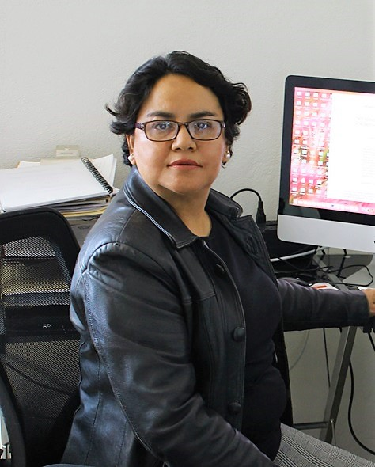

Investigadora Titular 3C · Programa de Robótica y Manufactura · CINVESTAV Saltillo
Especialista en robótica móvil, coordinación de vehículos autónomos, agricultura inteligente, visión por computadora, sistemas dinámicos e interacción humano-robot.
Cuenta con una sólida trayectoria académica, científica y tecnológica, destacando por su participación en proyectos de innovación, dirección de tesis de posgrado y publicaciones internacionales en revistas de alto impacto.
Publicaciones
Tesis dirigidas
Sistema Nacional de Investigadores
Años de experiencia
• Obtuvo los grados de Maestría en Ciencias en Ingeniería Química en 1998 y Doctorado en Ciencias en 2001, ambos en la Universidad Autónoma Metropolitana.
• En 1996 obtuvo el título de Ingeniero Químico Petrolero en la Escuela Superior de Ingeniería Química e Industrias Extractivas del Instituto Politécnico Nacional.
Desde el año 2005 es investigadora titular 3C del CINVESTAV Unidad Saltillo en el Programa de Robótica y Manufactura.
Participa activamente en proyectos multidisciplinarios relacionados con automatización, robótica inteligente, vehículos autónomos, agricultura tecnológica y control de sistemas dinámicos.
Ha dirigido múltiples tesis de maestría y doctorado en el área de robótica, inteligencia artificial, vehículos autónomos, navegación inteligente, visión artificial y cooperación multi-robot.
También ha impartido cursos de: Modelado y Optimización, Cooperación de Sistemas Dinámicos, Control II y Sistemas Dinámicos en programas de posgrado del CINVESTAV.
Además de su trayectoria científica, disfruta escribir cuentos cortos y poesía, viajar, cocinar, leer, hacer ejercicio y convivir con sus mascotas.
También participa activamente en actividades de divulgación científica y apoyo a mujeres en áreas STEM.